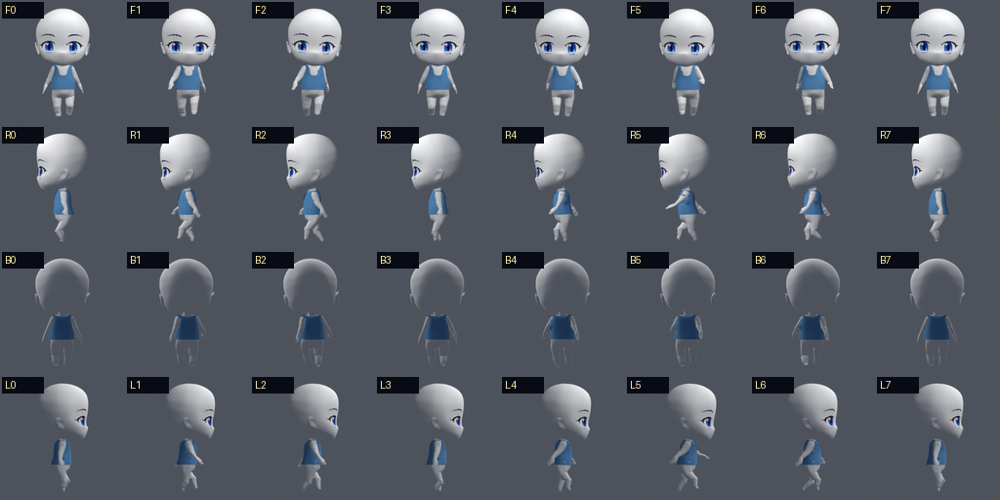
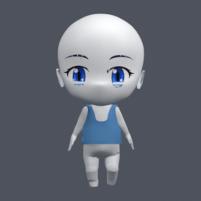
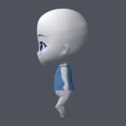
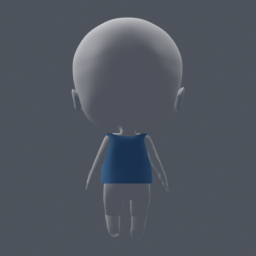
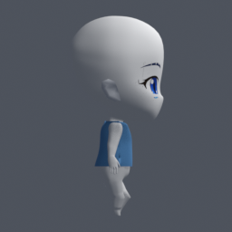

AssetsLab 服装里程碑
当前只保留用户确认的无袖上衣版本。其它服装实验候选已从本地生成资源和正式 Gallery 清理。
确认里程碑：无袖上衣
官方 Demo 风格的连续侧面过渡、开放下摆和 Surface Deform 动画链路。后续短袖实验必须以此衣身为基线，只增加袖窿与袖筒结构。

静止四视图




里程碑身份
| 候选目录 | prototype/test_output/garmentcode_official_side_supported_arc_clearance_final2_test/ |
|---|---|
| 状态 | 用户确认的无袖上衣里程碑 |
| 后续规则 | 短袖必须保留当前衣身的衣长、下摆、领口和侧面连续过渡，只增加官方 Demo 风格的袖窿与短袖结构。 |